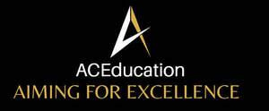
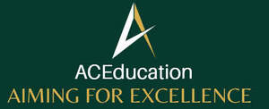

Trade Mark Journal No.2025/025 20 June 2025
UK00004212647 2 June 2025 (41)
Mark 1

Mark 2

- Class 41
- Education and training; Education, teaching and training; Training and education services; Education and training services; Education and training consultancy; Vocational education and training services; Provision of training and education; Provision of education and training; Computer education training; Vocational training; Linguistic education and training services; Education services relating to vocational training; Computer education training services; Training; Education; Training or education services in the field of life coaching; Career counselling relating to education and training; Educational and training services; Guidance (Vocational -) [education or training advice]; Vocational guidance [education or training advice]; Career counselling [training and education advice]; Medical training and teaching; Vocational training services; Vocational education; Career and vocational training; Vocational training courses (Provision of -); Teacher training services; Education and training in the field of business management; Vocational skills training; Training courses; Employment training; Career advisory services (education or training advice); Education and training in the field of occupational health and safety; Education and training services in the field of occupational health and safety; Education services relating to business training; Training of teachers; Education and instruction; Education and training in the field of music and entertainment; Academy services (Education -); Education academy services; Academy education services; Vocational skills training (Provision of -); Training and further training consultancy; Training and instruction; Providing of training, teaching and tuition; Postgraduate training courses; Teaching of diet education; Education and training in the field of automotive engineering; Provision of training courses; Training courses (Provision of -); Academies [education]; Educational and training programs in the field of risk management; Education and instruction services; Provision of training courses in personal development; Training services; Education and training services in relation to business management; Education academy services for teaching construction drafting; Career counseling [education]; Educational services for providing courses of education; Instructional and training services; Organisation of training courses; Providing courses of training; Educational and training services relating to healthcare; Education academy services for teaching languages; Consultancy relating to vocational skills training; Education academy services for teaching acting; Education services relating to the training of personnel in food technology; Training in philosophy; Educational certification services, namely, providing training and educational examination; Provision of education courses; Arrangement of training courses in teaching institutes; Consultancy services relating to the education and training of management and of personnel; Educational and training services relating to sport; Physical education instruction; Engineering training college services; Coaching [training]; Courses (Training -) relating to science; Training of sports teachers; Providing continuing medical education courses; Residential training courses; Courses (Training -) relating to medicine; Courses (Training -) relating to research and development; Training in administration; Training consultancy; Engineering training services; Postgraduate training courses relating to engineering technology; Education services; Vocational education in the field of mechanics; Fitness training services; Courses (Training -) relating to engineering; Vocational education relating to self-defence; Provision of training courses for young people in preparation for employment; Religious training; Courses (Training -) relating to finance; Organisation of conferences relating to vocational training; Education academy services for teaching art history; Residential education courses; Postgraduate training courses relating to management studies; Tuition in animal training; Recreation and training services; Entertainment, education and instruction services; Providing continuing nursing education courses; Life coaching (training); Language training; Training in the development of computer programs; Providing continuing dental education courses; Courses (Training -) relating to management; Practical training services; Organisation of training seminars; Provision of training; Publication of educational and training guides; Providing training and educational examination for certification purposes; Adult training; Courses (Training -) relating to banking; Courses (Training -) relating to insurance; Business training; Consultancy services relating to the development of training courses; Physical training services; Health education; Pre-school education; Educational and training services relating to games; Services of schools [education]; Training services for nurses; Personal development training; Educational services relating to sales training; Education services for imparting language teaching methods; Physical education; Provision of training courses for young people in preparation for careers; Conducting training courses relating to nutrition online; University education services; Sports training; Training in sports; Education and training services in relation to real estate management; Provision of facilities for employment skills training; Arranging of training courses; Management training services; Training related to nutrition; Education courses relating to automation; Training in business skills; Education examination; Career information and advisory services (educational and training advice); Courses (Training -) relating to accountancy; Organising of education seminars; Physical education services; Computerised training in career counselling.
Razia Aslam